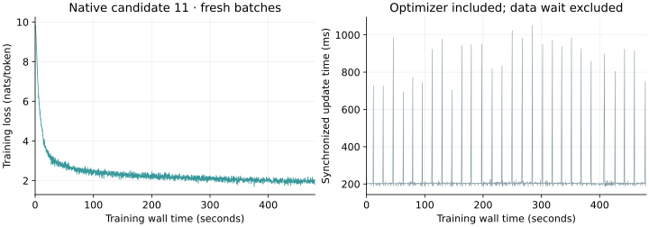

1. What is the bet?
The hypothesis motivating this report is that a large random network may already contain useful computations, with learning mainly selecting how to use them. There are two separable bets. A representation bet says a large initialized network already contains useful computations, and training can select or expose them. A learning-algorithm bet says a model can learn from measured responses to interventions without calculating the exact derivative through every operation. That hypothesis principally describes the first. Noise principally tests the second. Both can be true, but evidence for one does not establish the other.
Noise’s organizers make a broader prediction: search methods that use increasing compute will eventually outperform learning systems constrained by differentiability. That is their research hypothesis. The practical benchmark asks a narrower question: how well can forward-only training learn next-token prediction on a fixed small transformer? [1]
The strongest formulation supported by the current work is this: neural networks have enough structure and redundancy that carefully chosen, approximate feedback may be sufficient to learn useful features. If that feedback becomes inexpensive, the savings can fund more data, a larger model, or additional search. If it handles discrete operations well, it may also make new architectures practical. Neither benefit follows automatically from eliminating a backward pass.
The distinction matters because the selected Noise recipe changes the weights throughout the model. Its “routes” describe which effects a forward experiment measures and how credit reaches parameters. They do not mean that training merely chooses a fixed subnetwork from a random transformer. [2]
2. The problem every learning algorithm must solve
Prediction, parameters and loss
A language model reads tokens, such as words or word fragments, and assigns probabilities to the next token. Its parameters are the persistent numbers that training changes. Its activations are the temporary vectors computed for a particular input. An embedding turns a token identifier into a vector; attention mixes information across token positions; feed-forward layers transform each position; a final readout turns the result into token probabilities.
The loss measures how poorly those probabilities fit the observed text. For next-token cross-entropy, an individual prediction contributes:
Assigning probability 0.5 to the correct token incurs about 0.69 units of loss; assigning 0.1 incurs about 2.30. Lower is better. Averaging over many positions gives a training or evaluation score. The tokenizer and evaluation text matter, so raw losses from different benchmarks are not directly comparable.
Credit assignment
Suppose the model predicts “dog” where the text says “cat.” Which numbers should change? Perhaps an early layer discarded a useful word, attention retrieved the wrong position, or the final readout weighted a feature poorly. Credit assignment connects the final error to the intermediate computations and parameters that produced it.
Backpropagation uses the chain rule to compute a gradient: a vector describing the local sensitivity of the loss to every parameter. It efficiently reuses intermediate results while traversing the computation in reverse. An optimizer then decides how far to move. Backprop and Adam are different components: the first obtains a signal; the second turns that signal and its history into an update.
The forward-only perturbation methods discussed here obtain their signal by running experiments: change something, evaluate the result, and favor changes associated with lower loss. They can still estimate a gradient and use an optimizer. “Without backprop” therefore does not imply “without gradients,” “without learning weights,” or “without a training objective.” Simultaneous perturbation and evolution strategies have used this principle for decades. [5] [7]
3. How far does the random-network intuition go?
Random features: learn a useful combination
Imagine generating many nonlinear measurements of an input using randomly chosen directions. Some will respond to distinctions useful for a task. A trained output layer can combine them:
The functions φ are fixed features; the coefficients a are learned. Rahimi and Recht showed how particular random features approximate a chosen kernel, a mathematical rule for comparing inputs. This gives a principled case where useful learning does not require modifying the feature generator. It does not imply that any arbitrary random network supplies an efficient representation for every task. [10]
Reservoir computing extends a related idea to sequences. A fixed recurrent network transforms the input history into a collection of evolving states; training often changes only the readout. Its success depends on the reservoir dynamics and on whether its states retain the information the task needs. Randomness creates a candidate representation, while the trained interface determines its use. [11]
Lottery tickets and learned masks are different claims
The original lottery-ticket hypothesis concerns subnetworks whose initial weights make them especially trainable. The winning subnetwork is subsequently trained. It is not a claim that its untouched initial weights already solve the task. [12]
Supermask work comes closer to an interpretation based on selecting routes. It learns which connections to retain while holding their numerical weights fixed. Ramanujan and colleagues demonstrated strong image-classification subnetworks inside larger random networks. The connectivity mask carries learned information, and finding it uses optimization; their algorithm learns continuous connection scores with gradient-based feedback. Fixed weights do not remove the learning problem. [13]
Weight Agnostic Neural Networks instead search for architectures that work across shared weight values. This further illustrates that task information can live in topology. It also moves the cost into architecture search, which must be included when evaluating how cheaply a solution was found. [14]
The random-transformer paper most directly relevant here
Zhong and Andreas freeze random transformer blocks and train input embeddings and output unembeddings. Their models solve several algorithmic tasks, including arithmetic and associative recall. They interpret part of this behavior as selecting low-dimensional computational subspaces already present in the random network. The selection can be distributed across neurons; it need not be a literal sparse route. [15]
The language-modeling result is more limited. On TinyStories, a width-512 random-body model with about 10M trainable parameters reached loss 2.64, roughly matching a fully trained width-32 model with about 0.7M trainable parameters. These are that paper’s task-specific numbers. Both input and output interfaces were learned, using gradient-based optimization. This supports accessible computation at initialization, alongside a substantial efficiency and quality gap for the frozen-body approach. [15]
| Approach | Where learned information can reside | What remains fixed |
|---|---|---|
| Random features / reservoir | Readout, sometimes a learned input interface | Feature generator or recurrent reservoir |
| Supermask | Which connections are retained | Connection values |
| Random-body transformer | Input and output embeddings | Transformer blocks |
| Noise’s selected recipe | Weights throughout the model | Final architecture in the fixed-model track |
4. What large random matrices offer—and what “memory” means
The geometric intuition has a sound core. High-dimensional random maps can preserve useful distinctions between inputs. The Johnson–Lindenstrauss result, for example, says that suitable random projections approximately preserve pairwise distances in a finite set with enough output dimensions. Preserving distances is different from discovering the categories or relationships a particular task requires. [18]
Nonlinear random features offer many possible responses to inputs. Increasing width can increase the chance that some combination is useful. However, finding that combination, storing its coefficients and evaluating the resulting model all have costs. An existence result about a useful subnetwork does not tell us that a learning procedure can find it economically.
There is also a precise setting in which training mainly reweights capabilities available near initialization. Neural tangent kernel theory describes an infinite-width regime where a network’s training dynamics are governed by a kernel that remains effectively fixed. The weights can move while the effective feature basis changes very little. This helps explain why small changes spread over many parameters can substantially change predictions. [16]
That regime is not a general description of useful deep learning. Chizat and colleagues show that the scaling of a model can induce “lazy” behavior and report degraded performance for vision networks pushed into that regime. Learning new features can matter. The choice between selecting features and creating them is an empirical property of a training setup, not a universal consequence of large width. [17]
“Recording patterns” needs one further distinction. Before data arrives, an independently sampled random matrix cannot encode which specific observations will occur. After learning, information can reside in a mask, readout, embedding or changed internal weights. During a single sequence, it can also reside temporarily in activations or a recurrent state. A fixed random transformation can help encode or retrieve that information, but the information must enter somewhere.
For example, a random feature map could give every name a distinctive vector. A trained readout could then associate those vectors with occupations. The map supplies distinguishable addresses; the learned associations supply the facts. This is an illustrative analogy, not a claim that language models implement a literal lookup table.
5. The methodological path to Noise
Measure a direction instead of differentiating every operation
Let θ be the parameter vector, u a chosen direction, ε a small step, and L the loss. Two evaluations give a central finite difference:
A negative response means increasing θ along u locally helps. Combining responses along many directions provides an update estimate. Simultaneous perturbation methods can use a pair of evaluations even when θ has many coordinates. This keeps the evaluations per estimate small; it does not guarantee that the estimate contains enough information to learn rapidly in high dimensions. [5]
Independent random measurements tend to cancel irrelevant components when averaged. The number required depends on the geometry, noise, objective and estimator. Measuring an entire enormous weight vector through one scalar loss can be inefficient because useful effects must be separated from the other simultaneous changes. Classical comparisons of node and weight perturbation already identified the dimension of the injected noise as an important cost. [6]
Evolution strategies, MeZO and EGGROLL
Evolution strategies evaluate populations of perturbed models and move toward successful variations. Salimans and colleagues showed that shared random seeds and small communicated results can support large-scale parallel reinforcement-learning experiments. This established a systems advantage: candidate evaluations can be largely independent. It did not establish competitive language-model pretraining. [7]
MeZO adapted zeroth-order updates for language-model fine-tuning, reconstructing perturbations from seeds and modifying parameters in place to reduce memory. Its favorable results begin with a pretrained model and task prompts. That starting point may already contain the required capabilities, so fine-tuning is substantially different from building a general predictor from random initialization. [8]
EGGROLL reduces the cost of a population by using low-rank perturbations of weight matrices. Averaging many such contributions can produce a higher-rank update. Its experiments include language-model post-training and integer recurrent-model pretraining. This attacks the hardware cost of search; it does not remove the need to obtain informative feedback. Dust explicitly compares against a transformer implementation of this weight-space approach. [9] [3]
Move the experiments into activations
For a linear layer z = Wx, W may contain millions of numbers while one token’s output z contains hundreds or thousands. One can perturb z, estimate which changes would help, then use the known input x to construct a weight update. With column-vector notation:
Here ĝz is the estimated output credit. The outer product pairs each output credit with each input value. This reconstructs a direction for every weight of the linear map; it does not freeze those weights. Summing over tokens gives the batch update. The difficult part is obtaining accurate output credit at reasonable cost. [4]
For a small example, hold everything else fixed and shift one activation by ±0.01. Suppose the losses are 1.999 for the positive shift and 2.001 for the negative shift. The estimated credit is −0.1: increasing that activation helps. If its two inputs are (2, 1), the estimated gradient for the corresponding weight row is (−0.2, −0.1). A loss-minimizing update therefore increases those weights by amounts proportional to (0.2, 0.1). This is an illustrative numerical example, not a Noise measurement.
Dust applies independent activation perturbations at token positions, using their losses as feedback and combining their evidence. Token positions supply a form of parallel population. Attention couples positions, so the measurements can interfere; the method separates some probe sites and handles attention credit locally. The authors report better population efficiency than their weight-space baseline, but the headline orders-of-magnitude advantage partly relies on extrapolation. Their gradient-alignment measurements at checkpoints trained on up to 1B tokens are diagnostic measurements, not 1B-token forward-only training runs. [3]
Related alternatives: similar names, different rules
| Line of work | Which requirement changes? | Relation to Noise |
|---|---|---|
| Feedback alignment [19] | Random feedback replaces exact transposed forward weights in the teaching signal. | Evidence that approximate credit can train forward weights; still an error-propagation method. |
| Forward gradients [20] | Forward-mode differentiation computes a directional derivative without reverse-mode backprop. | Still uses differentiation. Noise’s rules prohibit both modes of autograd. |
| Local forward-gradient learning [21] | Activation perturbations and local objectives reduce the size of the credit problem. | A close methodological neighbor, with different derivative rules. |
| Forward-Forward [22] | Each layer distinguishes positive from negative examples using a local goodness objective. | Shares local learning; it does not use Noise’s particular next-token probe recipe. Local derivative-based updates are possible. |
The competition is unusually strict: the signal must come from forward evaluations, and a measured signal cannot be repeatedly propagated through nonlinear components. Exact linear transport is allowed. Thus avoiding a framework’s backward() call would not be sufficient if the program manually reproduced the full backward pass. [1]
6. What the selected Noise recipe actually does
Noise is a competition, not the name of one immutable estimator. Its archived results trace a progression from Dust through orthogonal probes, stagewise readouts and selected forward paths to future-token corrections and weight averaging. The report uses the fixed-model validation recipe pinned at 5e0d53fd02fd769d573e07af0d382d313c5ac878. [23] [2]
Boost: make intermediate states predict the target
During the first 20% of training, Boost evaluates intermediate residual-stream states through a shared output head. The residual stream is the vector passed between blocks, with new contributions added along the way. Reading it early supplies direct, stage-specific feedback. This is useful when a weak early layer would otherwise receive a difficult-to-measure signal through a long downstream computation.
Cut: measure selected routes to a loss
The remaining 80% uses Cut. It follows selected forward effects of interventions, including a token’s own query into later attention. A query determines which positions the token attends to; keys describe what those positions match, and values provide the information retrieved. Holding parts of the context fixed makes experiments cheaper, but also omits some dependencies. Separate key, gate and value paths restore additional credit. A gate is a computed multiplier that controls how much of a signal passes through.
Future-token probes measure how an earlier intervention affects later positions, an important dependency for language. For example, perturbing an earlier hidden state changes an attention output at a later position. A previous direct loss probe has already estimated which changes in that later output help prediction. The new probe compares its output change with that estimate, using their dot product as a local score. In this way it scores responses against original, directly measured credit signals. Corrected credit does not become the target for another nonlinear correction. This constraint keeps the method within the competition’s rules and limits how closely a cheap approximation can reproduce all effects of a full backward pass.
Structured measurements and numerical engineering
The recipe uses Hadamard directions: vectors of plus and minus signs arranged to be mutually orthogonal, meaning perpendicular and nonredundant as measurement directions. For fixed weights, inputs and a fixed local response, a complete cycle covers the measured activation space without the redundant directional coverage of independent random draws. This controls sampling error for a local linear response. Finite steps through nonlinear operations still introduce approximation error, and a restricted forward route still misses effects outside that route.
Many experiments reuse cached clean activations and factor known linear computations. They need not rerun the whole model. Stable algebra also matters: subtracting two almost identical losses can erase a small signal in finite precision. The implementation evaluates some changes through equivalent expressions that preserve small differences. These are engineering components of the learning algorithm, not evidence that randomness alone supplies supervision.
Optimization and the final merge
The reconstructed updates train matrices with ANVIL II, an optimizer designed for matrix weights, and use Adam for other parameter groups. Optimizer choice can change learning quality even with the same credit estimator, which complicates attributing gains to forward-only learning. At the end, the recipe searches combinations of weight averages from its own training trajectory. It reserves 32 training sequences for this selection rather than using the validation set. The final score therefore reflects credit assignment, optimizer settings, initialization, scheduling and this merge together.
These details are drawn from the pinned executable specification. The result does not isolate which component is responsible for how much improvement; that requires controlled ablations. In particular, the full recipe’s success cannot establish that learned routing alone is sufficient. [2]
7. What the reported result establishes
The 30M-token track uses a 37.7M-parameter dense transformer and one 8×H100 node. The reported seed-0 comparison is:
| Recipe | Validation loss | Reported training time |
|---|---|---|
| Dust + Adam | 3.767 | 5 h 17 min |
| Boost → Cut + merge | 3.409 | 1 h 43 min |
| Backprop + Adam | 3.419 | Not supplied in this comparison |
| Backprop + ANVIL II / Adam | 3.340 | Not supplied in this comparison |
The forward-only recipe narrowly beats the listed Adam control and trails the stronger backprop control. There are no uncertainty intervals here. The timing excludes compilation warmup and validation; the merge is inside the timed implementation. These records show competitive loss in this setting, without establishing a wall-clock advantage over backprop. [1] [2]
The archived 10M speedrun includes far shorter times at a weaker target loss of 4.2. Those are different runs, with different stopping conditions, from the 30M best-loss recipe. Quoting the fastest archived time beside the strongest current loss would combine incompatible results. [23]
Where the 1,000–10,000× headline comes from
Dust’s headline compares its activation-space perturbations with a transformer implementation of EGGROLL, which perturbs weights. Dust collects token-local feedback and reuses computations, obtaining much more informative measurements per unit of search. The paper explicitly describes the thousandfold comparison as an extrapolation. It does not report a thousandfold wall-clock advantage over backpropagation. Dust main paper.
The measured population ladder stops at approximately 16,000. At 10M training tokens, Dust with 64 draws reaches loss 5.397; EGGROLL at its largest population reaches 6.033, and backprop reaches 4.989. The authors fit EGGROLL’s loss-versus-population curve to estimate how much larger its population would need to be to match Dust. Across three fitting methods the projected multipliers are roughly 3,000–23,000. Some leave-one-population-out fits never reach the target at any population. Population has different definitions for the two algorithms, so these multipliers should not be read as measured elapsed-time ratios. Appendix C–D.
There is no contradiction between that result and our slow probes: an activation-based method can beat an extremely expensive weight-search baseline while remaining much slower than ordinary backprop. The headline supports a comparison within derivative-free learning. It supplies no evidence of a production training speedup over backprop.
8. How much faster is forward than backprop in a modern MoE?
An MoE, or mixture of experts, routes each token to a subset of expert networks. Belay is the larger MoE transfer experiment examined in this project; “candidate 11” names its selected model configuration.
For the matrix-multiplication portion of a model, a useful starting estimate is: backward costs about twice one forward, and forward plus backward costs about three forwards. These are operation counts, not measured universal wall-clock ratios. The comparison must use the same batch, sequence length, precision and hardware. Autoregressive serving, which generates tokens sequentially, is a different workload from evaluating a known training sequence.
Why the familiar factor is about three
For a matrix layer, forward computes Wx. Backward generally computes two comparably sized products: one for the input gradient and one for the weight gradient. A sparse MoE applies the same accounting to the experts actually selected for each token. Sparsity helps the backprop baseline as well as the forward-only method.
DeepSeek-V3, for example, has 671B total parameters and 37B activated per token. The ratio 671/37 is not a possible backprop-removal speedup: ordinary training already computes sparse expert paths. A large total parameter count matters for storage and optimizer state, while the active computation and communication determine much of the step cost. [24]
Noise still has to form weight updates
The optimistic threefold budget compares one forward evaluation with ordinary training. An activation-credit method also has to turn output credit into weight updates. The product ĝxᵀ is analogous in shape and arithmetic to the weight-gradient product in backprop. It therefore retains part of backward’s work, even though its credit was measured without differentiation. It may also perform exact linear transport and optimizer operations.
In a deliberately simplified matrix-dominated model, suppose ordinary training costs 3F, where F is one clean forward, and reconstructing weight updates costs about F. Then a forward-only update costs approximately 2F plus its probes. Even with negligible probe cost, this model predicts about a 1.5× compute speedup, not 3×. This is a budget illustration, not a bound: fusion, sparse accumulation, optimizer choice, replay and different update constructions can change it.
Elapsed time requires a separate accounting from the arithmetic estimate above. Using T to denote time:
The terms represent clean forward, backward, activation replay, additional probes, credit transport and update reconstruction, and remaining overheads, respectively. Treat these as non-overlapping contributions on the critical path; summing individual kernel times would double-count overlapped work. Every quantity needs measurement for the intended implementation.
Returning to arithmetic only, with F defined as one forward’s matrix-compute work:
| Illustrative case | Relative compute | Speedup versus 3F training |
|---|---|---|
| One evaluation, no learning update | 1F | 3× (not a training algorithm) |
| Forward + update reconstruction, negligible probes | 2F | 1.5× |
| Same, with probes costing 0.5F | 2.5F | 1.2× |
| Same, with probes costing 1F | 3F | 1× |
| Same, with probes costing 3F | 5F | 0.6× |
All entries are arithmetic scenarios, with equal useful progress per update assumed. If the forward-only method needs twice as many updates to reach a target, halve the corresponding time-to-target speedup. A hundred probes can still be cheap if they each touch a tiny component; two probes can be expensive if they replay most of a model. Counting calls alone is misleading.
What changes the wall-clock ratio?
Distributed MoEs route tokens to devices holding the selected experts, run grouped matrix operations, and return results. Communication, token rearrangement, unequal expert loads and small matrix shapes can limit utilization. Megatron overlaps expert communication with computation, including across forward and backward work. Removing backward changes which communication can be hidden. Repeated routing probes may repeat transfers or interfere with those schedules. [25] [26]
For scale, the MoE Parallel Folding paper reports 49.3% model FLOPs utilization for Mixtral-8×22B on H100s in its best configuration. That is not a forward/backward ratio; it illustrates why peak arithmetic alone does not predict elapsed time. Parallel layout and communication are material parts of modern MoE performance. [27]
Memory can be a separate source of benefit. Avoiding reverse-mode activation storage may allow a larger batch or reduce replay. But the Noise recipe caches activations, constructs credit tensors, keeps optimizer state and tracks several weight averages. Its actual memory footprint must be measured. MeZO’s inference-like memory result cannot simply be transferred to this more elaborate estimator. [2] [8]
For Belay candidate 11, a matched synthetic forward/backward profile is now available; no completed forward-only treatment has trained. The measured opportunity is a constant-factor saving that the current probes more than consume. Claims of 10× or 100× faster training would need additional advantages in convergence, architecture, precision or systems design, supported by end-to-end measurements.
Forward equivalence and the first measured forward cost
On 23 October 2026, the full 1.026B-parameter model matched the native forward implementation exactly on eight H100s at a global batch of 128 sequences, each 4,096 tokens long. Here, “capture” means returning cached intermediate activations needed for the probes; “parity” means equal outputs for the same weights and inputs. The native path and the path returning intermediate activations produced identical final states, shared-expert inputs before the nonlinear activation, and routing selections. Initial checks had exposed output-dependent bfloat16 differences; disabling excess precision and XLA’s Triton GEMM fusion resolved those initialization discrepancies without relaxing the comparison tolerance. The native control and component probes use these compiler settings. See the full-shape diagnostic.
The last two native hidden-state forwards took 55.14 and 55.39 ms; returning the captured activations took 61.59 and 61.50 ms. These are synchronized timings on synthetic inputs at initialization. They exclude the vocabulary loss, backward pass, optimizer, data loading and compilation. They therefore measure capture overhead, without establishing faster learning or the forward/backward ratio. The separate matched loss-forward and backward measurements below include the vocabulary loss. The implementation record links the raw evidence and resource accounting.
Measured backward saving and probe cost
A subsequent test used the same 1.026B-parameter configuration, synthetic global batch 128 × 4,096, eight H100 80GB GPUs in one JAX process, compiler settings and initialized weights. The backprop control used the native training objective, bfloat16 computation and float32 master weights (higher-precision parameter copies retained for updates). Its gradients were finite, and the forward-only and differentiated loss values agreed within the existing numerical tolerance. The table reports medians of three synchronized calls after compilation.
| Operation | Median time | Included work |
|---|---|---|
| Native loss-forward | 61.53 ms | Model, vocabulary loss and configured training terms. |
| Native forward plus backward | 156.90 ms | Same objective plus all parameter gradients; no optimizer update. |
| Twelve Boost readouts | 61.23 s | Full 512-direction central-probe cycles, using already captured activations; no parameter reconstruction. |
Forward plus backward took 2.55× the loss-forward time. Replacing it with one forward would save about 61% of that component's time before paying for probes or updates. The current Boost readouts alone cost 390× the forward-plus-backward time. This implementation therefore has a severe query-cost problem: removing backprop cannot offset its present probe overhead. Even making capture, reconstruction, optimization and communication free would leave this naive implementation about 390× slower per equally useful update. Eliminating the backward pass saves roughly 95 ms; it cannot pay for 61 seconds of probes. A time-to-quality advantage would require an unmeasured, enormous improvement per update or a fundamentally cheaper estimator. This finding applies to the implemented full-cycle, twelve-readout adaptation. It is not a lower bound on all forward-only algorithms or an optimized production implementation. Sources: matched forward/backward timings and full-batch Boost timings.
The Boost measurement covers all twelve sublayer readouts for one global batch: the additive output of the attention module and of the feedforward module in each of six layers. Candidate 11's depth-attention gate forms a learned weighted mixture of intermediate layer states before the vocabulary readout. Each readout probes 512 directions, evaluating both positive and negative perturbations through that mixture and the 16,384-token vocabulary. Across twelve readouts, 512 directions and two signs, the algorithm performs 12,288 logical vocabulary-loss evaluations per token. It reuses head projections, so this is not a count of fresh full matrix multiplications; the repeated loss evaluations over 16,384 vocabulary entries still create substantial work. These evaluations use cached activations; they do not rerun the whole model. They are tiled in groups of 16 directions and 64 tokens. The comparison excludes optimizer updates, data loading and evaluation from both timings. The Boost figure also excludes capture, head-parameter credit, expert-matrix reconstruction, Cut's future-token probes and trajectory merging. These measurements establish costs at initialization; training quality and time to a target loss remain unmeasured.
How narrow is the realistic path to a speedup?
Using the measured synthetic forward cost F=61.53 ms and forward-plus-backward cost T=156.90 ms, the optimistic component speedup for replacing one ordinary update with m target forwards is T/(mF+C), where C includes proposal and update construction. With C=0, one target forward permits at most 2.55×, two permit 1.27×, and three already cost more than T. These are optimistic arithmetic ceilings on those measured components, not end-to-end training forecasts. The fresh-batch control’s 203.36 ms median includes the optimizer; subtracting it from a separate synthetic microbenchmark would not isolate optimizer cost.
Consequently a practical method needs unusually informative, cheap credit; very few expensive target evaluations; and lasting progress sufficient to pay for rejected proposals, parameter reconstruction, optimizer state and communication. A nested small drafter could reduce proposal cost, but verification must often replace several useful large-model updates to pay for itself. Four target forwards, for example unchanged/candidate comparisons on both screening and confirmation batches, already cost about 246 ms before proposal work. Memory savings or a better discrete architecture could alter these economics, but neither has been demonstrated here. Fixed attention, vocabulary-head work and routing can limit how cheap a draft becomes even when many stored parameters are removed.
The measured naive twelve-readout implementation has no credible per-update speed advantage. Full-scale reconstruction, Cut, future-token correction and merging remain unmeasured; assigning them zero cost still leaves the 61.23-second readout bill. A winning alternative would need to change that computation or deliver a very large, sustained gain per accepted update. The evidence motivates testing cheap proposal ranking and amortized verification; it does not support a production speedup claim.
Belay wrap-up: control and bounded components
The final scope is a complete native backprop control and a bounded record of the implemented forward-only components. The full Boost → Cut transfer is unfinished: Cut, future-token probes, and several attention, normalization and embedding parameter groups remain unimplemented. There is no forward-only candidate 11 training outcome or held-out quality comparison.
The RNO2A native backprop control completed 2,116 updates in 479.876 seconds, presenting 1,109,393,408 token positions (1,109,122,560 scored next-token positions). Full native evaluation of the selected EMA weights yielded Paloma macro loss 3.019722 across all 16 Paloma corpora; seven additional evaluation corpora were also scored. This is a reference backprop result, not a forward-only treatment. Complete result; training series.
| Quantity | Measured value | Interpretation |
|---|---|---|
| Median synchronized native update | 203.36 ms | Forward, backward and optimizer; fresh real batches. |
| Timed training | 479.876 s / 1.0664 GPU-hours | Includes 27.75 s of data waits and local metric recording. |
| Successful job lifecycle | 757 s / 1.6822 GPU-hours | Pod creation through completed output capture. |
| Dataset / state / compile / warmup | 11.24 / 16.85 / 63.88 / 3.60 s | Outside the training allowance; warmup uses state copies. |
| Checkpoint / capture screen / evaluation | 32.69 / 21.47 / 85.47 s | Outside training; checkpoint is evaluation weights only. |
| Largest allocator high-water mark through training | 44.21 GB per GPU | Includes initialization and discarded warmup; not training-only memory. |
The historical candidate 11 seed-0 control reached Paloma loss 2.971509 after 2,698 updates in its 480-second allowance. This RNO2A replication made 582 fewer updates and finished 0.048213 nats/token higher. It retained the original 2,698-step schedule, seed, architecture, batch size, data recipe, optimizer and EMA rule. It therefore completed fewer decay steps and fewer EMA updates. Cluster, runtime fixes and compiler settings also differ. This single run cannot isolate which difference caused the loss gap and is not evidence about Noise’s learning quality. Historical seed-0 run.

Numerical screening and its limits
The original elementwise tolerance, |a−b| ≤ 10⁻⁵ + 10⁻⁵|b|, was selected for this port; it was not a tolerance specified by the Noise authors or Belay. After the user authorized a less restrictive GPU screen, the bounded component record uses activation RMS error divided by the reference activation RMS ≤0.5%, absolute mean cross-entropy change ≤0.001 nats/token, and selected-expert-slot disagreement ≤0.1% in every layer. The latter is the fraction of token/expert-slot positions with different expert identifiers, counting ordering differences as disagreements. All activations must be finite. These are engineering screening limits, not guarantees of equal updates or learning trajectories. Maximum error and the old failure fraction remain recorded; CPU mathematical component tests retain their original tolerances.
One-GPU testing exposed a separate repeatability bug in the local expert implementation: conflicting low-precision scatter additions: several expert outputs were added into the same location in an order that could vary, changing the rounded result. Ordered FP32 combination restored repeatability. Changing which intermediate tensors are returned can also change the compiler’s execution plan and rounding. Shared compiler boundaries then made the complete one-GPU capture agree exactly. On eight GPUs after short training, routing capture still changed 0.00847% of hidden-state elements, with maximum error 0.0625; individually tested capture groups other than routing agreed exactly. A passing aggregate screen would bound this discrepancy for the measured batch, without establishing full algorithm correctness. One-GPU record; eight-GPU routing isolation.
The final trained-state screen passed: relative RMS error 0.3079%, mean cross-entropy change +0.00000143 nats/token, and worst-layer expert-slot disagreement 0.05064%. However, the maximum individual hidden-state difference was 12.078125, and 1.4516% of elements failed the former strict tolerance. The low aggregate loss drift does not rule out important local outliers. We have not established that these captured states yield equivalent credit estimates or learning trajectories. Full screening diagnostics.
The implemented bounded components include twelve independent Boost readouts and reconstruction for the vocabulary head and final normalization gain, shared and routed expert matrices, router matrices, latent expansions (projections back from compressed expert features), and MLP causal convolutions. The router tests hold expert choices and capacity masks fixed, leaving changes in expert selection untested. Twenty-four small-model component tests pass. They compare responses against independent finite differences or native derivatives, including packed-document boundaries and expert parallelism. They do not test a complete treatment update.
All 29 GPU attempts are terminal. Their combined reservation upper bound is 8.8397 GPU-hours, including failed attempts, short diagnostics and the completed control. Of this, 1.0664 GPU-hours was the successful timed training interval. Each job used one or eight H100s; cancellation cleanup briefly overlapped one replacement, giving a conservative peak reservation of 16 GPUs. The canceled attempt uses submission-to-confirmed-pod-absence accounting; other attempts use pod creation through output completion. These bounds include queue, setup and capture and are not utilization estimates. Complete resource ledger.
9. A skeptical assessment: where the approach could hit a ceiling
Written by a separate research subagent tasked with challenging the thesis. These are additional predicted scaling and quality limitations, beyond the measured Belay probe-cost result above.
The strongest objection is economic: backpropagation already extracts an unusually large amount of information from each training example. One reverse pass measures how the loss changes with every parameter, conditional on the computation performed. A forward probe reveals a response along a chosen direction or route. The alternative wins only if its cheaper measurements retain enough useful information to offset their number and their mistakes. Removing a backward pass establishes an opportunity for savings; it does not establish faster learning.
Structure must keep paying for the missing information
Classical zeroth-order optimization has dimension-dependent query costs. Those results do not directly condemn Noise: it observes internal activations and token-level losses, and exploits known linear maps. Indeed, theory shows that sparsity assumptions can sharply improve zeroth-order scaling. The unresolved question is whether the exploitable structure remains strong as tasks become harder. A full orthogonal cycle covers a space of width d with d directions. Partial cycles save work while leaving directions less well measured. Neither choice guarantees cheap, accurate credit at arbitrarily large width. Wang et al., 2018.
There are two distinct errors. Variance means an estimate changes across probe draws; more independent measurements can reduce it. Bias means the measurement systematically omits an effect, for example a dependency held fixed while probing another route. Repeating the same restricted experiment does not recover that dependency. Noise's winning script explicitly adds future-token, key-input and gate-input corrections, and prevents corrected credit from being repeatedly passed through further nonlinear probes. My prediction is that deeper, longer-context models will expose a tradeoff: retain the restrictions and risk a quality plateau, or measure more interactions and spend the compute savings. Pinned Noise implementation.
Sparse routing creates difficult cases as well as opportunities
An MoE activates only selected experts for each token. This saves work in ordinary training too. A small perturbation that preserves the selected experts measures behavior within the current route; it says little about the value of choosing an unselected expert. A larger perturbation can change the selected set abruptly, mixing routing changes with changes inside the experts. This is an inference from top-k selection, not evidence that forward probing cannot learn routers. It suggests measuring expert utilization, route changes and losses for infrequent token groups, alongside aggregate loss. Existing MoE work already identifies communication and training instability as practical obstacles. Switch Transformers.
Rarely selected experts also receive fewer examples. No estimator can infer a useful specialization from data it never sees without an additional exploration mechanism or prior. Forward search may help explore alternative routes, but those trials cost computation. Freezing routes for efficiency and aggressively exploring routes are different experimental choices, with different expected ceilings.
The fastest kernel is not necessarily the fastest training run
Probe batching can produce excellent GPU throughput while requiring more total work to reach the same loss. Modern distributed MoEs already overlap communication with forward and backward computation; DeepSeek-V3's DualPipe is one example. Removing backward work changes that schedule and may expose previously hidden communication. Repeated probes may also repeat expert dispatch or fragment otherwise large matrix operations. These are reasons to measure the complete training step on the intended hardware, including communication and optimizer updates. They are not a claim that every probe must rerun the full model. DeepSeek's DualPipe implementation.
What would change this assessment?
A useful test would compare the complete forward-only recipe with a tuned backprop baseline at equal wall time and equal hardware, then repeat across model depth, context length and several seeds. Plot both training and held-out loss against elapsed time. Separately increase probe count: improvement suggests measurement noise; a persistent gap suggests bias, optimization or representational limits. Check long-range retrieval and rare-token performance, because a modest average-loss improvement can conceal regressions on infrequent dependencies.
Finally, compare frozen-body readout or routing training with forward-only updates to all weights. That ablation distinguishes selecting existing computations from learning new features. The present evidence supports investigating a practical alternative credit-assignment method. It does not yet establish that random initial features suffice for advanced language modeling, or that the best attainable quality will match backpropagation as training continues.
10. What would distinguish the competing explanations?
The broad thesis contains hypotheses that need different experiments. A favorable loss curve alone cannot tell us whether useful features were already present, whether approximate credit is sufficient, or whether hardware savings compensate for worse updates.
| Hypothesis | A useful test | Evidence against it |
|---|---|---|
| Most useful computation is accessible at initialization. | Compare trained readouts/embeddings or masks on a frozen body with full weight learning under matched resource budgets. | A persistent quality or efficiency gap that grows with task complexity. |
| Forward measurements provide enough credit. | Sweep probe budget and path coverage; compare held-out loss with a tuned backprop control. | Quality plateaus despite more measurements, or adequate credit costs more than backprop. |
| Approximate credit improves wall-clock learning. | Compare time and GPU-hours to the same evaluation target, including update construction and communication. | Fast probe kernels but slower convergence or fewer useful updates. |
| Derivative freedom enables a better model family. | Test a concrete discrete or low-precision architecture with an appropriate strong baseline. | No quality/efficiency advantage after search and tuning costs are included. |
Belay is a useful stress test because its selected recipe combines sparse experts with recurrent and attention components. The local shape audit records approximately 1.026B total parameters, versus Noise’s 37.7M dense model. That is about 27× as many stored parameters, not 27× the computation per token. Its routing, recurrence and different evaluation protocol make transfer a substantive test of the estimator’s assumptions. The recovered candidate specification is documented in the experiment record and the adoption issue. [28]
For that test, measure both equal-time performance and equal-token performance. The first evaluates practical efficiency; the second helps distinguish statistical learning quality from execution cost. Profile clean forward, probes, credit reconstruction, optimizer and communication separately, while also reporting the complete step. Evaluate multiple seeds and include long-range and infrequent-token behavior. This wrap-up stops at the native control and bounded component measurements. Paired forward-only training outcomes remain unmeasured; the speculative-pretraining experiment is a separate proposal.
My assessment is that the most credible near-term bet is cheaper sufficient credit: preserve useful feature learning while reducing the cost or constraints of obtaining its training signal. The stronger claim that a large random body already provides essentially everything needed remains a separate, more demanding hypothesis. Noise’s current result does not require that stronger claim to be true.
Speculative pretraining: cheap proposals, target-model verification
A promising extension is to use a cheap model or update predictor to propose several training steps’ worth of progress, then ask the large model to evaluate the proposal with forward passes. A ladder proxy is a smaller member of a related model family, used to estimate behavior at a larger scale. The proposal need not reproduce the update that backprop would have made; it needs to deliver useful progress at lower total cost. This is a research proposal, not a demonstrated benefit of the current Noise recipe.
The analogy to speculative decoding is useful but incomplete. In decoding, the target verifies several proposed tokens using the same weights and parallel computation across positions; the acceptance procedure can preserve its sampling distribution exactly. Proposed parameter updates generally require evaluating different target weights. They cannot share computation as conveniently, and accepting a lower-loss checkpoint does not preserve an exact training trajectory. [32]
A concrete tied MatFormer-like drafter plan now specifies nested expert widths, shared parameter coordinates, synchronization, candidate construction, controls, acceptance checks and stopping rules. It is a plan only; no drafter experiment has launched.
Predicting a curve versus predicting an intervention
Accurate loss forecasting provides a useful starting point, but two capabilities must be distinguished. Trajectory forecasting predicts the loss reached after more training under a specified recipe. Counterfactual forecasting predicts which proposed change to the current model will improve subsequent learning most. A smooth aggregate loss curve does not establish that individual updates, or their ranking, are predictable. The first empirical question is whether the forecasting system retains accuracy when asked about interventions.
Cross-scale transfer introduces another constraint. Different-width models need not represent features in corresponding coordinates. A proxy’s raw weight update therefore needs an explicit mapping into the target. μTransfer demonstrates transfer of useful hyperparameters under an appropriate parameterization; it does not establish transfer of individual update directions. A more conservative starting point is to transfer step sizes or coefficients over update directions already defined in the target model. [33]
A practical first design
- Constrain the proposals. Form candidates from combinations of recent target-model updates, low-rank changes, or blockwise step sizes. Let the proxy rank or choose coefficients. Occasional backprop updates could refresh the reference directions in a hybrid method; this would be a separate experiment from a strictly backprop-free treatment.
- Screen cheaply and verify few candidates. Compare candidates on the same fresh training minibatches to reduce comparison noise, then confirm the finalist on a separate batch. Rotate these batches to limit selection overfitting and keep the final evaluation set untouched.
- Adapt the jump length. Permit larger jumps when predicted and observed improvements agree; shorten them when agreement deteriorates. Specify how optimizer state changes after an accepted jump, since unchanged momentum and variance estimates may no longer suit the new weights.
The economic target is to replace several expensive updates with a small number of evaluations. Four full target forwards are unlikely to be attractive substitutes for one matrix-dominated forward-plus-backward update. For one candidate, four verification forwards could evaluate the unchanged and proposed weights on both a screening batch and a separate confirmation batch. Replacing ten updates at that cost would be attractive if the jump delivers comparable lasting progress. These are illustrative budgets. The accounting must include proxy training, rejected candidates, verification, state handling and recovery; batching candidates may reduce latency without reducing GPU-hours.
A preliminary preprint, Leap+Verify, already studies future-weight prediction followed by loss-based acceptance. It reports both successful predictions and substantial predictor and regime limitations. It is relevant prior art, not an established production speedup. [34]
The first test should measure proposal-ranking accuracy at fixed target checkpoints, across training stages. Report two rankings separately: immediate loss improvement on a separate assessment batch, and held-out loss after an equal continuation budget from each candidate. Compare proxy-selected proposals with simple momentum extrapolation, a learning-rate sweep and ordinary training, charging for all search and verification. Then continue training from accepted checkpoints: an immediate loss decrease can conceal worse subsequent learning. Success would mean lower time and GPU-hours to a fixed held-out quality, not merely a high acceptance rate. This directly tests whether cheap models can predict useful interventions on expensive models.
11. Short glossary
- Activation
- A temporary vector computed from an input; different from a persistent parameter.
- Credit
- A signal indicating how changing an intermediate value would affect the learning objective.
- Perturbation / probe
- A deliberate change used to measure the response of a model or objective.
- Zeroth-order
- Obtaining optimization feedback from function values rather than supplied derivatives.
- Population
- A collection of perturbations or candidates evaluated to form an update.
- Bias / variance
- Systematic error in an estimator / variation between its measurements.
- Readout / unembedding
- A map from hidden features to outputs, often vocabulary scores.
- MoE
- Mixture of experts: a model that routes each token to a subset of available expert networks.
- Kernel / lazy regime
- A similarity-based learning description / a regime where the effective feature basis changes little during training.
- Time to target
- Elapsed training time required to reach a specified evaluation quality.
12. Sources and reading guide
For the shortest reading path: start with the random-transformer paper [15], the Dust report [3], the pinned Noise implementation [2], and the MoE systems report [25]. The papers on kernels and subnetworks explain neighboring hypotheses rather than establishing Noise’s mechanism.
Evidence policy: competition numbers are author-reported and have not been independently reproduced here. Diagrams are original explanatory schematics. Figure 4 reproduces the listed scalar scores; Figure 5 and the compute table are explicitly hypothetical accounting examples. Source snapshot: 23 October 2026. External pages may change; Noise links are pinned to the inspected revision.
- Noise: competition rules and 30M-token records (snapshot)
Q Labs, 2026. Benchmark definition, reported scores and timing boundary.
- Noise: winning Boost → Cut implementation
Executable method specification; module description and Boost, Cut, future probes, optimizer and end_merge implementations.
- Dust: Pretraining Transformers Without Backpropagation
Dahal et al., 2026. Immediate research predecessor; distinguish measured results from extrapolations.
- Dust: reference implementation
Source code for activation perturbation and reconstruction of weight updates.
- Multivariate stochastic approximation using a simultaneous perturbation gradient approximation
Spall, 1992. Classical simultaneous perturbation optimization.
- Learning Curves for Stochastic Gradient Descent in Linear Feedforward Networks
Werfel, Xie & Seung, 2003. Node perturbation, weight perturbation and dimension-dependent learning.
- Evolution Strategies as a Scalable Alternative to Reinforcement Learning
Salimans et al., 2017. Parallel search using reward-weighted parameter perturbations.
- Fine-Tuning Language Models with Just Forward Passes
Malladi et al., 2023. MeZO: memory-efficient zeroth-order fine-tuning of pretrained models.
- Evolution Strategies at the Hyperscale
Sarkar et al., first posted 2025. EGGROLL: low-rank perturbations and hardware-efficient populations.
- Random Features for Large-Scale Kernel Machines
Rahimi & Recht, 2007. Random features as an approximation to a specified kernel.
- Echo State Networks and Reservoir Computing
Jaeger research group. Fixed recurrent reservoir with trained output connections.
- The Lottery Ticket Hypothesis
Frankle & Carbin, 2018/2019. Sparse subnetworks with initializations favorable for subsequent training.
- What’s Hidden in a Randomly Weighted Neural Network?
Ramanujan et al., CVPR 2020. Learn a connectivity mask over fixed random weights.
- Weight Agnostic Neural Networks
Gaier & Ha, 2019. Search architectures evaluated across shared weight values.
- Algorithmic Capabilities of Random Transformers
Zhong & Andreas, NeurIPS 2024. Embedding/unembedding training, subspace selection, and its limitations.
- Neural Tangent Kernel: Convergence and Generalization in Neural Networks
Jacot, Gabriel & Hongler, 2018. A kernel description of training in an infinite-width regime.
- On Lazy Training in Differentiable Programming
Chizat, Oyallon & Bach, 2019. Scaling determines the lazy regime; limitations for representation learning.
- An elementary proof of a theorem of Johnson and Lindenstrauss
Dasgupta & Gupta, 2003. Random projections can approximately preserve finite-set distances.
- Random synaptic feedback weights support error backpropagation for deep learning
Lillicrap et al., 2016. Random feedback can support learning of forward weights.
- Gradients without Backpropagation
Baydin et al., 2022. Forward-mode automatic differentiation; distinct from derivative-free probing.
- Scaling Forward Gradient With Local Losses
Ren et al., ICLR 2023. Activation-space perturbations and local losses reduce estimator variance.
- The Forward-Forward Algorithm: Some Preliminary Investigations
Hinton, 2022. Layer-local goodness objectives with positive and negative examples.
- Noise: archived 10M-token competition
Historical evolution of the recipes; a different training budget from the current 30M track.
- DeepSeek-V3 Technical Report
DeepSeek-AI, 2024. 671B total parameters, 37B activated per token; modern sparse-model context.
- Scalable Training of Mixture-of-Experts Models with Megatron Core
NVIDIA authors, 2026. Expert dispatch, recomputation, precision and communication overlap.
- Megatron Core: Mixture of Experts
Official implementation documentation. Communication overlap and memory/compute choices.
- MoE Parallel Folding
Liu et al., 2025. H100 measurements showing the importance of parallelism and utilization.
- Marin Belay specification and candidate 11 adoption
Experiment context. This report contains no new Belay treatment result.
- Stochastic Zeroth-order Optimization in High Dimensions
Wang et al., 2018. Dimension costs and improvements under structural assumptions.
- Switch Transformers
Fedus, Zoph & Shazeer, 2022. Sparse expert routing and practical training challenges.
- DualPipe
DeepSeek implementation of overlapping computation and communication in pipeline training.
- Fast Inference from Transformers via Speculative Decoding
Leviathan, Kalman & Matias, ICML 2023. Parallel draft verification with the target sampling distribution preserved.
- Tensor Programs V: Tuning Large Neural Networks via Zero-Shot Hyperparameter Transfer
Yang et al., 2022 arXiv version. μTransfer transfers hyperparameters across model scales; it does not establish direct transfer of weight updates.
- Leap+Verify: Regime-Adaptive Speculative Weight Prediction for Accelerating Neural Network Training
McEntire, 2026 preprint. Preliminary investigation of predicting and verifying future weights, including reported failure modes.